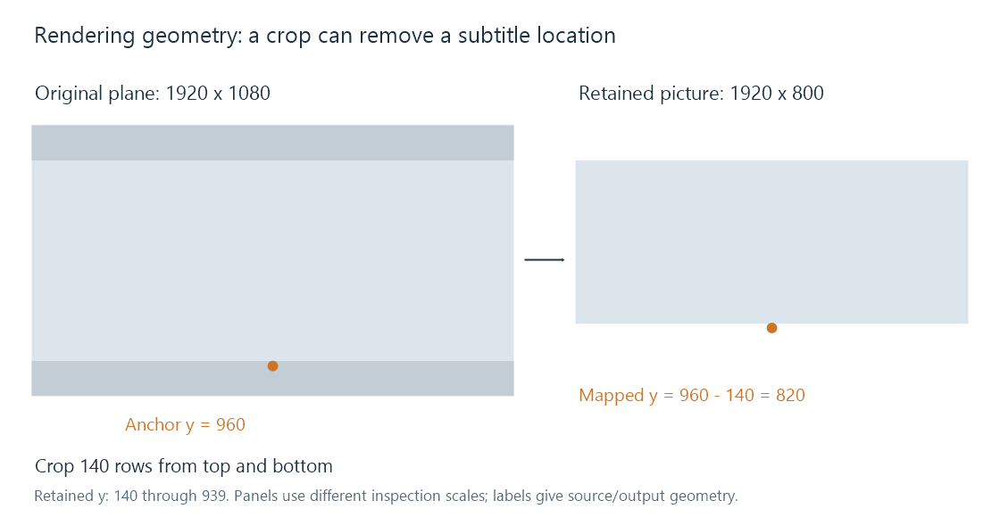

Subtitle rendering
Subtitle rendering evaluates timed content, shapes or decodes its visual elements, and composes them in the applicable output geometry.
A subtitle renderer produces the presentation appropriate to the current media time. It determines which events are active, resolves their appearance and placement, and supplies visible pixels for composition with video.
For text, that includes font selection and shaping. For bitmap subtitles, it includes decoding image/palette state. Styled text can add motion, clipping and changes within an event. Drawing the same initial caption image throughout the whole cue is insufficient for such an event.
Evaluate the event at programme time
Suppose an ASS event starts at 12.5 seconds and moves for its first second. At programme time 13.0, the event is 0.5 seconds into its motion.
A seek directly to 13.0 should produce that current state, rather than start the movement over. Faster playback also traverses the programme-time animation faster in wall-clock time. An implementation that drives it from a fresh wall-clock timer after each seek would produce another presentation.
The renderer needs applicable global styles, resources and decoder state as well as the local event text.
Geometry describes the drawing surface
The source subtitle can use a script/display plane, while the player shows video in a differently sized viewport. Scaling, sample aspect ratio, letterboxing and cropping establish the relationship between those planes.

Take a 1920 × 1080 picture cropped by 140 rows at the top and bottom. The retained picture is 1920 × 800, corresponding to original y coordinates 140 through 939.
A subtitle anchor at original y = 960 lies outside that retained area. Merely subtracting the crop's top offset gives y = 820, which is also outside the new 800-row surface.
The pipeline must decide whether the intended presentation includes the original lower area, is clipped with the picture, or is deliberately repositioned on the new viewport. Those choices are not equivalent transforms.
| Operation | Consequence in this example |
|---|---|
| Compose on the full original plane, then crop | A caption confined to the removed lower area is cropped away |
| Crop first, retain original coordinates unchanged | The coordinate system no longer matches the surface |
| Crop first, apply a defined mapping/repositioning | The renderer can produce a selected new layout |
This is a geometry illustration, not a claim about a particular Emby crop policy.
Shape and rasterize at the required size
Shaping determines glyph selection and positions for the chosen font and script. Layout determines line breaks and alignment. Rasterization then samples those outlines into the output pixels, with outline, shadow, fill and transparency as applicable.
Rendering text at the final output size can retain useful glyph detail. Enlarging an already rasterized small caption instead scales existing pixels. A bitmap subtitle begins with already drawn lettering, so it follows that latter kind of image-resampling problem.
An outline and partly transparent edge also have to be composited in the intended colour/transparency model. The caption's apparent weight can change when sampling or compositing changes, even if its font-size number stays the same.
User preferences and authored styling have different scope
A simple dialogue track can delegate much appearance to the app. A typeset sign can prescribe font, placement and effects for a scene. Which user overrides are applied depends on the format, renderer and chosen policy.
Emby's appearance preferences describe its controls for text size, colour, background, shadow and position. Those controls are not a promise that every bitmap or authored effect is reconstructed as editable text.
Composition can take place at the app, preserving a separately selectable subtitle. If the server composes it into encoded video, the client receives those completed subtitle pixels as part of that video version. The relevant rendering surface and resources belong to the stage doing that work.